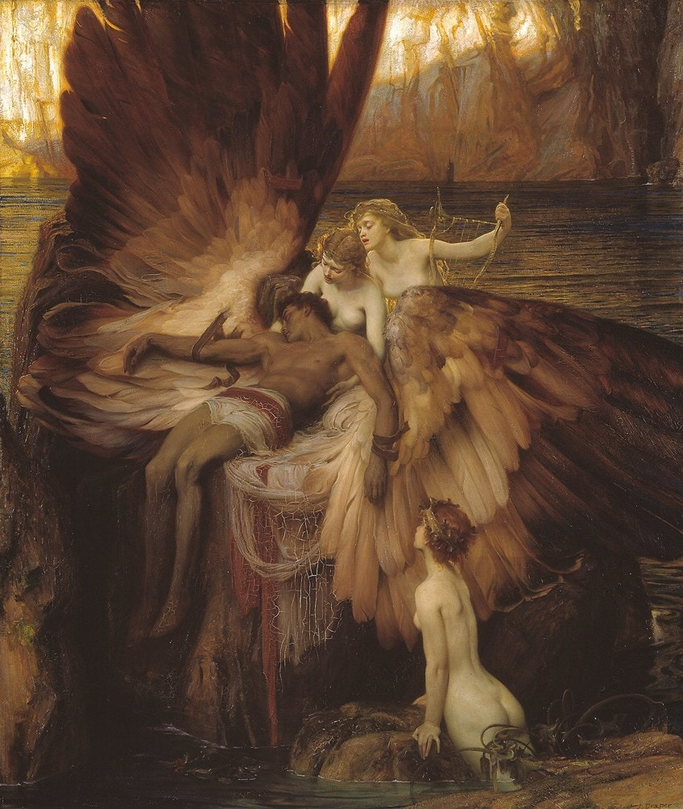
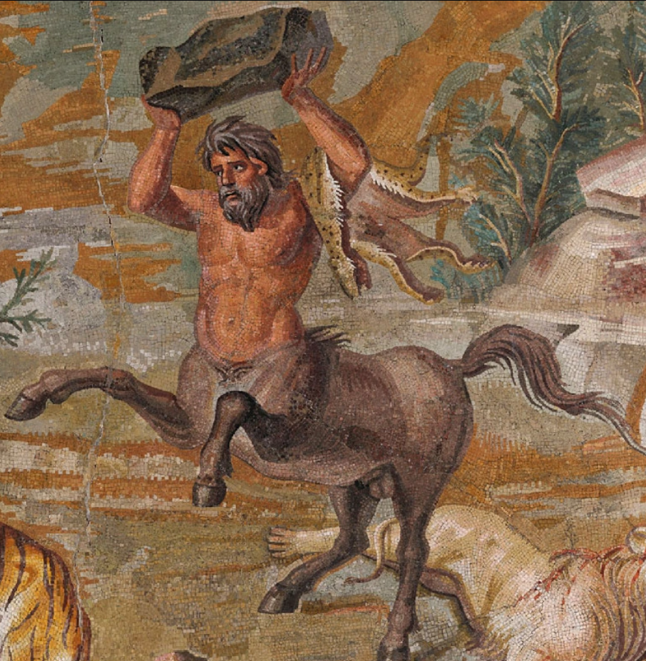

Las Criaturas en la Mitología Griega: Monstruos y Bestias
La mitología griega está poblada de criaturas extraordinarias, muchas de ellas monstruosas, que representaban los miedos, los desafíos y lo desconocido para el ser humano. Estas criaturas no eran simples bestias; cada una tenía un simbolismo particular, una historia rica y, en muchos casos, servían como pruebas o enemigos para héroes y dioses. Eran también guardianes de lugares sagrados, castigos divinos o incluso mezclas de razas divinas y animales míticos.

Criaturas Emblemáticas y sus Historias
Una de las criaturas más famosas es la Hidra de Lerna, una serpiente de múltiples cabezas que regeneraban dos por cada una cortada. Fue enfrentada por Heracles (Hércules) como uno de sus doce trabajos. Para vencerla, quemaba cada cuello tras cortarlo, impidiendo que se regenerara.
Otra bestia temible fue el Minotauro, una criatura mitad toro y mitad humano, nacida de una unión antinatural por castigo de los dioses. Fue encerrado en el Laberinto de Creta, diseñado por Dédalo, y finalmente asesinado por Teseo, marcando una de las hazañas más legendarias de la mitología.
La Quimera era un ser con cabeza de león, cuerpo de cabra y cola de serpiente o dragón, que escupía fuego. Fue derrotada por Belerofonte, montado en el caballo alado Pegaso, quien la atacó desde el cielo
La temida Medusa, una de las tres Gorgonas, tenía serpientes por cabellos y convertía a quien la mirara en piedra. Fue decapitada por Perseo, quien usó un escudo de bronce como espejo para evitar su mirada.
El Cerbero, el perro de tres cabezas, guardaba las puertas del Inframundo. Era hijo de monstruos y símbolo del paso entre la vida y la muerte. Fue capturado vivo por Heracles como su último trabajo.
También existen criaturas menos temibles y más misteriosas como las sirenas, mitad mujer y mitad ave (luego representadas como mitad pez), cuyo canto encantador atraía a los marineros a la muerte. Ulises (Odiseo) logró oírlas sin sucumbir al hechizo amarrándose al mástil de su barco.
Simbolismo y Función de los Monstruos
Estas criaturas no eran simples enemigos físicos. Representaban lo desconocido, el caos, los límites que los humanos no debían traspasar o las consecuencias de la desmesura (hybris). Derrotarlas no solo requería fuerza, sino astucia, humildad o incluso ayuda divina. Por eso, las hazañas contra estos seres suelen marcar el paso de los héroes hacia la madurez o la gloria.
Algunas criaturas eran guardianes de secretos o de lugares sagrados. Por ejemplo, la Esfinge proponía un acertijo a quienes pasaban por Tebas, y mataba a quien fallara. Sólo Edipo logró resolverlo, liberando a la ciudad. Otras como los centauros, mitad hombres mitad caballos, simbolizaban la lucha entre lo civilizado y lo salvaje.
Datos Curiosos
- Muchas criaturas eran hijas de Tifón y Equidna, considerados los "padres de los monstruos" en la mitología griega. De ellos nacieron Cerbero, la Hidra, la Quimera, entre otros.
- Algunas bestias eran tan poderosas que incluso los dioses las temían o evitaban enfrentarlas directamente.
- criaturas también aparecían en ritos religiosos, esculturas, pinturas, y arquitectura, como decoraciones simbólicas en templos o como advertencia contra el orgullo humano.
- En muchos casos, los monstruos tenían una segunda versión más amable o transformada en la literatura posterior, como ocurre con los centauros sabios (Quirón) o Pegaso, criatura monstruosa pero noble.